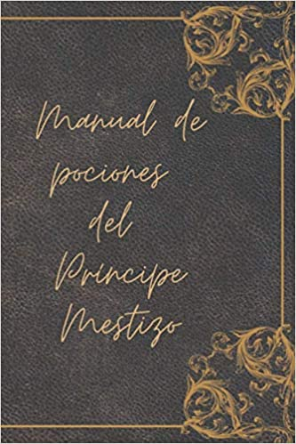

Libro del Príncipe Mestizo
Dónde hallarás las mejores recetas. Usalo con responsabilidad.

- Amortentia
- Tres hebras de cabello de la persona que te guste.
- Cinco pétalos de rosa azul.
- Tres cucharadas de azúcar blanca.
- Una raíz de orquídea.
- Agua del mar Negro.
- Sangre de unicornio.
- Poción multijugos
- Sanguijuelas.
- Crisopos.
- Descurainia sophia.
- Centinodia.
- Polvo de cuerno de bicornio.
- Piel serpiente arbórea africana.
- Algo de la persona de la que se quiere adoptar su aspecto, usualmente un cabello.
- Felix Felicis
- Huevo de ashwinder.
- Bulbo de squill.
- Tentáculo de murtlap.
- Tintura de tomillo.
- Cáscara de huevo de occamy.
- Polvo de ruda.
- Crece-huesos
- Una col masticadora china.
- Tres peces globo.
- Cinco escarabajos.